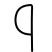
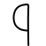
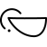
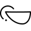

September 2020
Reviderade symbolerna för E-hand, F-hand, Q-hand och långfinger:
- Q-hand (från till ). Tog bort symbolen för Q-hand och ersatte den med tumhanden (med nedåtriktad tumme). – Enligt Svenskt teckenspråkslexikon (webbversionen) finns det bara två tecken som använder Q-handen i svensk teckenspråk: en variant av det handbokstaverade Q:et, och ett tecken som utförs likadant men som betyder ‘dam’ (kortlekskortet) och bägge dessa tecken transkriberas med tumhanden av bokversionen av lexikonet. (Det verkar onödigt att ha en särskild symbol som är så sällsynt.)
- E-hand (från till ). Den tidigare symbolen var en var en modifierad variant av ASLwrites (amerikanska) E-hand, men den var lite omständig att skriva och handens attityd var otydlig. Den nya symbolen är istället en modifierad knuten hand () (där tumstrecket går tvärs igenom och sticker ut på anda sidan) med samma attityd som knuten hand.
- F-hand (från till ). Förenklade symbolen en aning. Denna symbol är en modifierad variant av hållhanden () – eventuellt skulle denna hand lika gärna kunna skrivas med stora nyphanden ().
- Långfingret (från
till ). Förenklade symbolen. Den
tidigare versionen var en modifierad version av knuten hand
() – den nya symbolen föreslogs
av Adrean Clark på ASLwrites fejsbokgrupp och är istället en modifierad
variant av lillfingret (
 ).
).
Reviderade handalfabetets utseende. E, F, Q och R förändrades som ett
resultat av ändringen av handformer (beskriven ovan). För I och J spegelvändes
symbolerna så att de får samma orientering som D. För Y, Å och Ö förenklades
rörelsebeskrivningen. Symboler som förändrats är markerade med blå bakgrund
nedan.
 A
A B
B C
C DE
DE
 F
F GH
GH
 I
I J
J K
K L
L M
M NO
NO
 PQ
R
PQ
R
 S
S T
T UV
W
X
Y
UV
W
X
Y
 ZÅ
Ä
ZÅ
Ä
 Ö
Ö
Såhär såg handsymbolerna ut innan förändringen:
A
B
C
 DE
F
G
H
I
J
K
L
M
N
O
P
Q
R
S
DE
F
G
H
I
J
K
L
M
N
O
P
Q
R
S
 T
T UV
W
X
Y
Z
Å
Ä
Ö
UV
W
X
Y
Z
Å
Ä
Ö